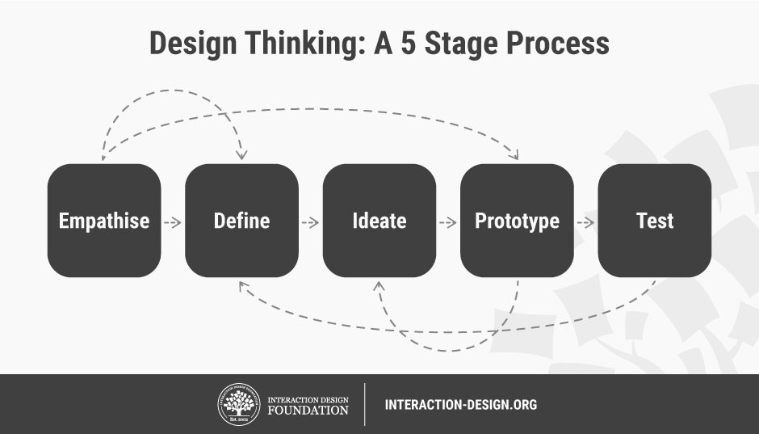

Hola! Come sit and have some tea :)
I've got some fun stuff to share with you!
Best way to learn is by doing!
We will start with a question and work through it together!
The COVID-19 pandemic has disrupted or halted critical mental health services in 93% of countries worldwide while the demand for mental health is increasing, according to a new WHO survey. So here is the question:
How can we encourage individuals who are suffered from mental health issues to reach out for the help they need?
Design thinking
This is a iterative process that help us understand the user, challenge assumptions and and redefine problems in an attempt to identify alternative solutions.
This would be a good method to help us approach our problem as it provides a general framework before we get into the details of finding the solutions.
Empathise
with your users
Our main purpose with stage 1 is to gain deeper understanding with our users and the problem we are trying to solve, which in our case, we have to figure out ways to better understand people who struggle with mental health whether we have personally expereinced it or not.
This is crucial to help us identify pain poins and struggles of our users, so that we can better define the problem we are solving.
For this UX kit, I will use my second UX method which you will learn more about later, interviewing people who struggle with mental health. By asking questions and listening to their stories, our goal will be to immerse ourselves in our users' environemnt and gain a deeper understanding of how they feel.
Interviews
Interviews is a core UX method that can help us gain firsthand knowledge about the problems our users are facing and gain insight on what they are trying to do.
Show me how!Define
your users' needs, their problem, and your insights
After we have talked to our users and put together all the information, now can start defining our problem in a human-centred manner.
To better visualize the result of our stage 1 research, why don't we create a empathy map to help us see the pains and gains of our users.
Let's visualize our findings with an empathy map!
Empathy Map
Empathy maps can be used to establish common ground among team members and to understand and prioritize user needs. This is also most helpful at the beginning stage.
Show me how!Here are some of the problems I discovered through the interviews and our empathy map:
1. The only thing the help line cares about is whether you're trying to hurt yourself or not.
2. Some interviewers said they didn't seek help as they didn't wanna be viewed as sick.
3. One-on-one therapy section can be expensive.
4. "I'm frustrated at myself for feeling this way."
...
Ideate
by challenging assumptions and creating ideas
With the knowledge we got from our first two phrases, now we are ready to brainstorm solutions!
How about we use Crazy 8s to help us with brainstorming.
Crazy 8s
This is a design sprint method that aims to push beyond our first idea, frequently the lease innovative, and to generate a wide variety of solutions to our challenge.
Show me how!Prototype
to start creating solutions
This is an experimental phase where we create prototypes to help us investigate the ideas we've generated and find the best possible solutions.

Test
our solutions
This last phrase is where we test our the prototypes that we've created and redefine further problems.
And this brings us to our last tool, scenarios.
Scenarios
This method helps us visualize aspects of our solutions which users might appreciate most in their contexts. It can help expose vital areas to test our solutions. As user scenarios help teams explore the design space and locate precise and hard-to-notice user needs, they can also keep stakeholders on track with a shared vision.
Show me how!There you have it! All five phases of the design thinking method.
Remember, we can go back to the previous stages as many times as we need without having to follow the sequence of them until we get to our desired solution!
WooHoo!
You've made it to the end!
Which one is your favourite? :D